Fiero · Competition & challenges
Every point has a
little personality.
Character animation, playful feedback, and a mobile interface for friendly competition. I designed Fiero’s screens and the motion that gives every challenge a little personality.

01 / Character animation
A competitive spirit.
Three ways to show it.
Motion is part of Fiero’s visual identity. Expressive eyes turn simple shapes into characters, giving each challenge an attitude through gaze, timing, and a change of expression.
The challenge characters bring that personality to life through three animated expressions: defiant, disappointed, and dizzy. Each expression comes in four colour variations, carrying the same character across the app’s visual palette.
A little competitive spirit.
Even losing has a personality.
A playful change of pace.
Original challenge animations · Three expressions, four colours.
Animations could not load. Refresh to try again.
02 / Microinteractions
Even waiting
gets a little character.
The same visual language extends to loading and quantity selection. Eyes stay expressive while geometric shapes stack, balance, and settle into place.
These original motion studies show how timing and movement connect the smallest interface moments to the personality of the app.
Keeping the character in the wait.
Building up and settling back, one shape at a time.
A continuous, playful rhythm.
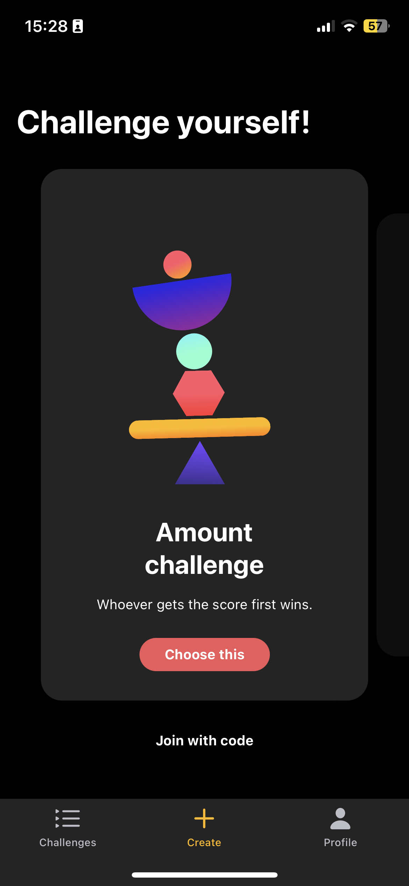
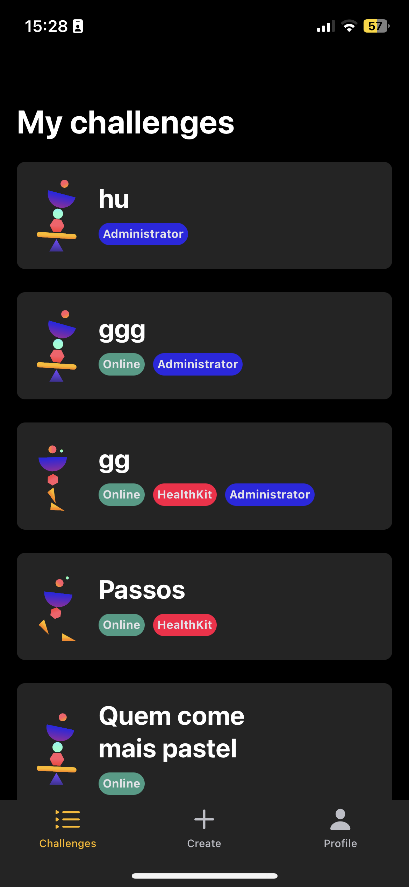
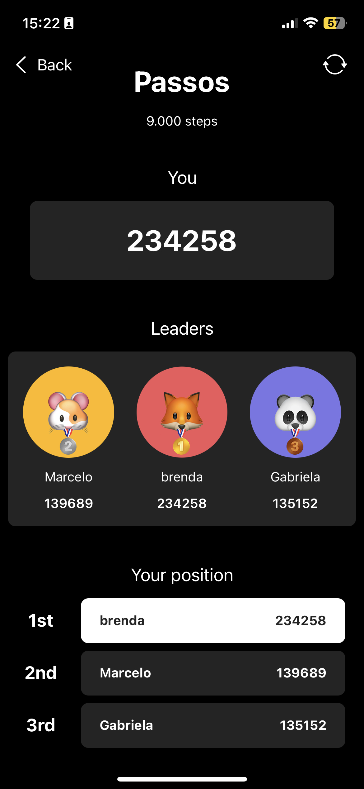
The experience
Competition is social.
The interface should feel that way.
Fiero brings challenges, scores, and rankings into one mobile experience. From a quick match to a walking challenge, the interface gives each competition a place and each participant a visible position.
My work covered the visual interface and the way it responds: animations and microinteractions that carry the app’s personality through the experience. This case focuses on that interface and interaction craft.
03 / Interface
Clear scores.
Expressive competition.
Large numbers keep the score at the centre of attention. Challenge cards bring together names, distinctive characters, and compact status labels. Leaderboards pair rankings with animal avatars and medals, making the competition feel personal.
Dark surfaces frame the information while coral, yellow, violet, and mint give the experience its energy.
A playful identity, held together by a clear hierarchy.
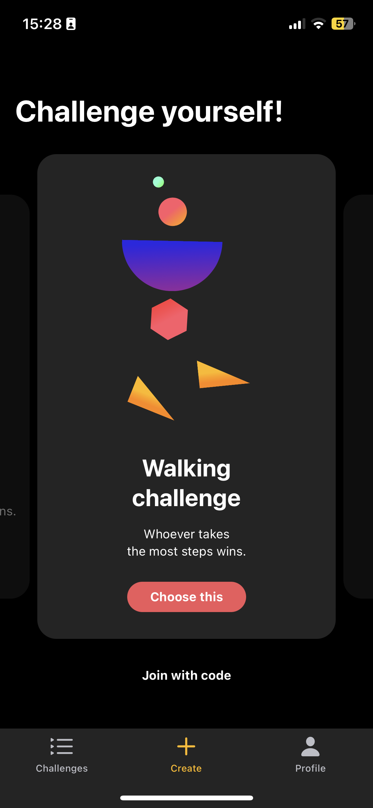
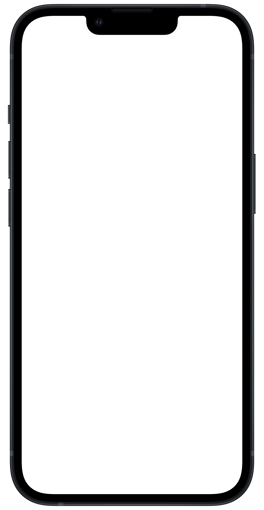
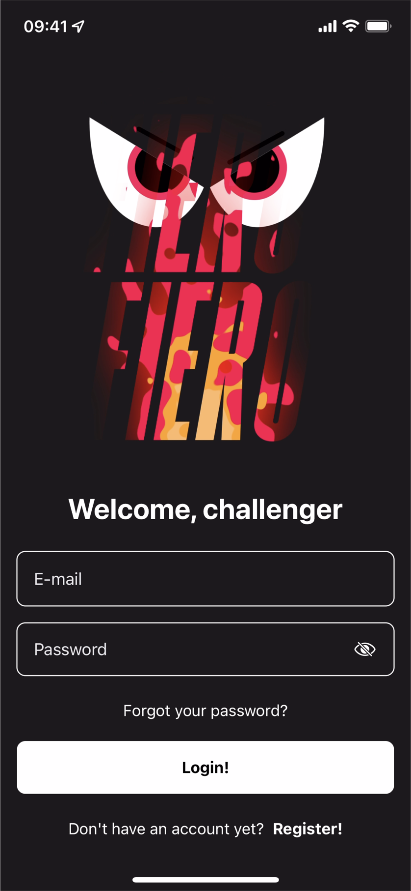
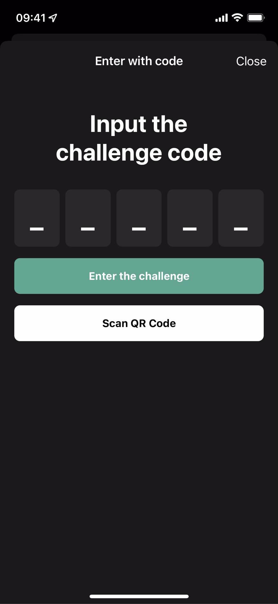
Interface collection
More of the Fiero experience.
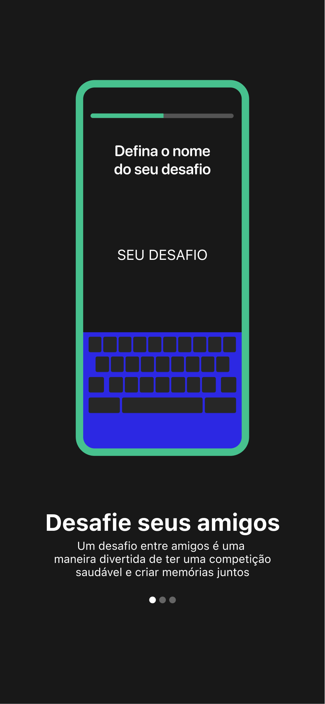
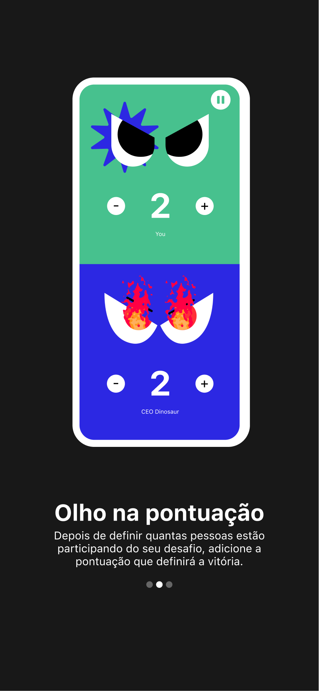
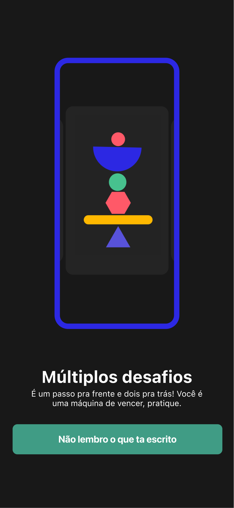
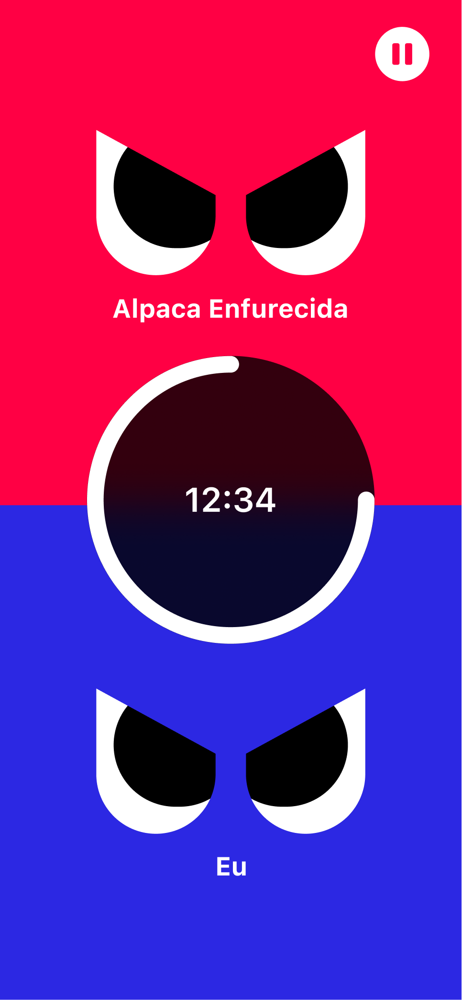
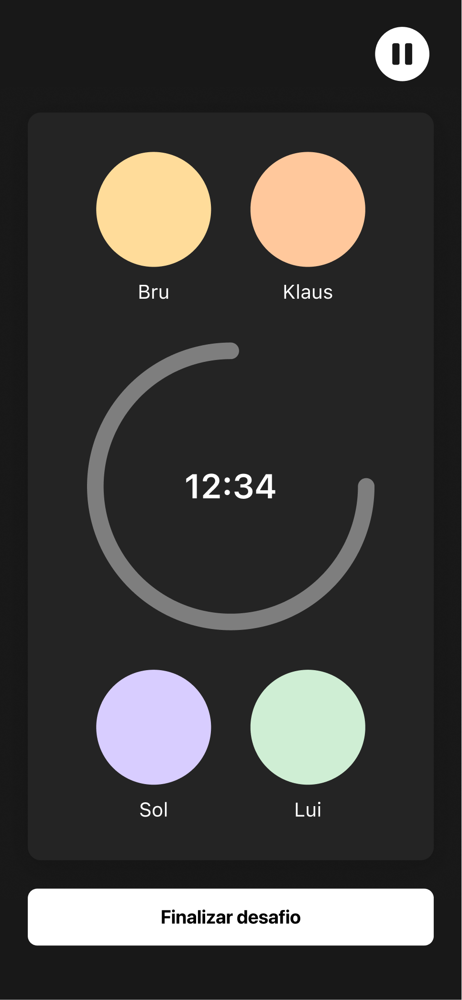
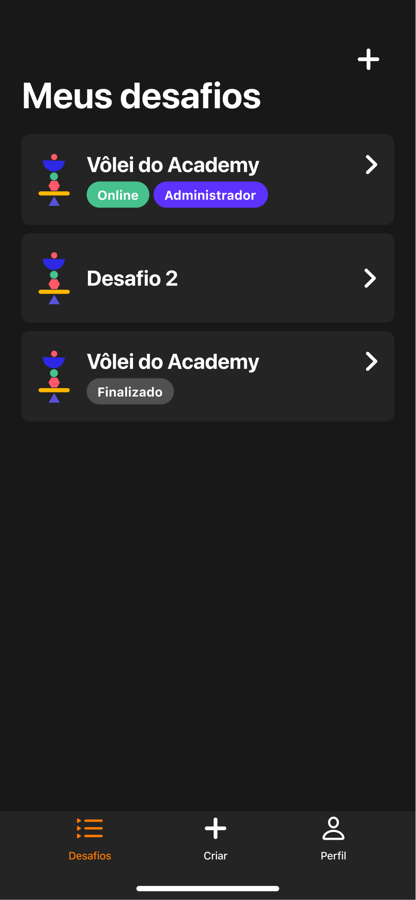
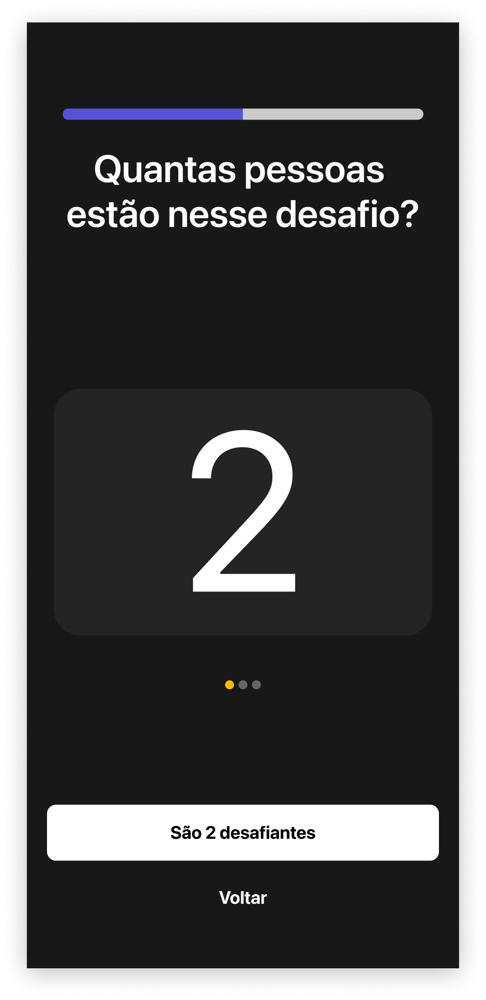
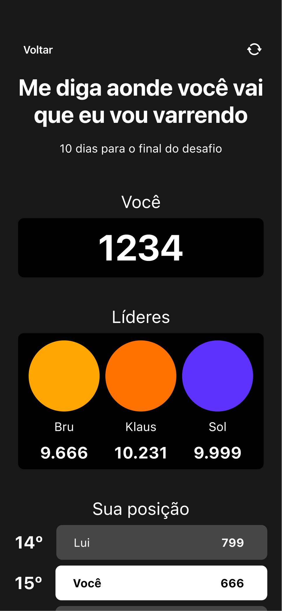
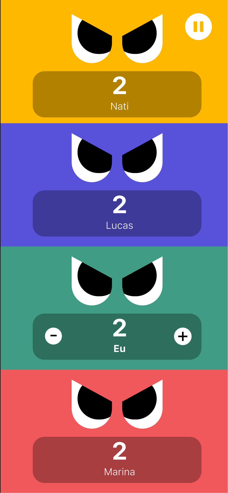
04 / The interface in motion
From a little expression
to a complete experience.
Original app recordings show the flow between screens: creating a challenge, choosing how to play, and inviting someone to join.
From the first choice to an offline challenge.
Setting up a shared competition.
Bringing someone into the game.
More app flows
A challenge on the same device.
Entering an existing competition.
Exploring the interface with larger text.
Returning to the app through account recovery.
The contribution
An interface with
a competitive spirit.
For Fiero, I connected interface design, animation, and microinteractions around a shared visual personality. The screens bring clarity to the score, while the interaction work gives attention to the moments between actions.